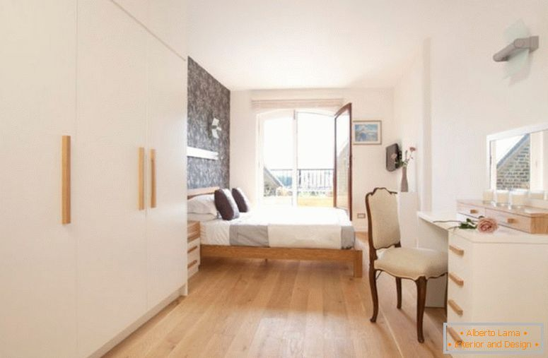

Cum amenajezi dormitorul? | Adela Pârvu - Interior design blogger
 MENU Romania Mea Cine sunt Despre mine Press Contact blog Design Interior si Arhitectura Garsoniere Apartamente Case Pensiuni Travel si Timp liber Gradina Amenajari Gradina Balcoane Design floral Gratare Legume si plante aromatice Sfaturi plante Oameni talentati Designeri si arhitecti Peisagisti si horticultori Artisti, artizani, handmade Mesteri Shopping Magazine, targuri, expozitii Mobila Electrocasnice si dotari Decoratiuni Finisaje Constructii Produse gradinarit Cum sa DIY/ Inainte si dupa Idei pentru acasa In trend IMI PLACE Concursuri
On 3 noiembrie 2016 In Idei pentru acasa , Mobila 20
Cum amenajezi dormitorul?
Rareori se întâmplă ca spațiul alocat dormitoarelor să fie unul generos, ceea ce pune mari probleme în amenajarea lor. Și când mă refer la spațiu spun nu doar despre metri pătrați, ci și despre golurile existente în cameră, adică poziția ușii de interior și a ferestrei. Modul cum sunt prezente aceste goluri în cameră se resimt ca fiind problematice mai ales când îți dorești un dulap în spațiul odihnei pentru că patul, de regulă, e ușor de amplasat, dar ocupând o suprafață importantă, nu mai lasă loc de altceva în încăperile mici. Ca atare, care sunt secretele vizavi de amenajarea unui dormitor? Hai să-ți spun pas cu pas înainte să te lași furat de colecții atragătoare de paturi pe care le găsești în magazine, așa cum am găsit și eu la Kika (vezi filmul de la final), la reduceri (perioada de reduceri este între 11-13 noiembrie 2016 la dormitoare, saltele și textile pentru dormitor).
În foto dormitor Tripoli, vezi detalii AICI
Înainte de toate îți spun că cel mai important lucru într-un dormitor este salteaua! Apoi, merită să-ți spun despre câteva date informative. Paturile de două persoane pot avea saltele cu lățimea de 140 cm, 160 cm, 180 cm și 200 cm (inclusiv mai late realizate la comandă). Întotdeauna când alegi un anumit tip de saltea, trebuie să ai în vedere că patul, cadrul acestuia, va fi mai lat decât salteaua pe care o conține, deci va ajunge să fie cel puțin cu 10 cm mai lat decât aceasta. În dormitoarele mici cele mai recomandate sunt paturile de 140 cm, maximum 160 cm. Pe lângă pat, ca și zonă de acces la el e bine să existe minimum 60 cm. Dacă în aceeași cameră e și pat și dulap, distanța dintre pat și dulap e bine să fie de 80 cm (pentru acces la dulap, care de regulă are 60 cm lățime pentru ușile sale). Dacă ai dulap cu uși culisante, te poți descurca și cu o distanță între pat și dulap de 60 cm.
În foto dormitor Sumatra cu mai multe piese care includ finisaje de tip lemn învechit, vezi preț AICI
Atenție! Când îți calculezi spațiul disponibil în dormitor, ia în considerarea dimensiunea patului astfel: saltea + 15 cm (de jur împrejur pentru cadru pat) + 60 cm pe trei laturi (mai puțin tăblia). Vei constata că, spre exemplu, la un pat cu salteaua de 140 cm, dimensiunea reală, folosibilă a patului este de fapt de circa 2,75 lățime x 2,75 metri lungime, ca atare numai patul îți ocupă circa 7,5 mp. În funcție de acest aspect vei lua în considerare dacă ai loc pentru dulap (care are adâncimea de 60-65 cm minimum) sau nu. De asemenea, deși pare tentant să ai pat cu ladă sau cu sertare, ia în calcul cât loc de manevră ai pentru așa ceva. Deseori într-un dormitor mic nu ai loc să deschizi sertarele de sub pat sau te trezești că nu ţi-e deloc comod să folosești lada patului. Și da, într-un dormitor mic e mult mai comod să ai un pat tapițat (vezi AICI un model al preț bun ).
În foto dormitor Monaco cu piese realizate din lemn masiv de pin și băițuite cu produse care lasă să se întrevadă fibra lemnului, vezi preț AICI
Unde pui patul? Întotdeauna locul patului îl iei în calcul în funcție de ceea ce-ți dorești să vezi în fața ta atunci când stai culcat și de stilul de amenajare pe care-l dorești (la un stil clasic, o poziție simetrică a patului și noptierelor ajută mult). De regulă, patul se pune astfel încât să poți vedea atât ușa, cât și fereastra (face parte din instinctul nostru de a ne lua măsuri de precauție față de exterior). În casele tradiționale, patul era orientat cu vedere către est, astfel încât soarele de dimineață să stimuleze natural trezirea. Dar dacă ai o cameră mică la bloc, poți foarte bine așeza patul cu vedere doar către ușa de la intrare, deci cu tăblia în dreptul ferestrei și de asemenea, poți să sacrifici accesul pe o parte a patului și să-l lipești de zidul cu fereastră. De asemenea, locul patului îl alegi și în funcție de disponibilitatea prizelor și a surselor de alimentare pentru corpurile de iluminat. Trebuie să ai prize de o parte și de alta a patului (pentru veioze) sau măcar corpuri de iluminat (suspendate, înglobate în mobilier etc). Găsești tot la Kika o mulțime de corpuri de iluminat potrivite .
Contează foarte mult nu doar cum arată un dulap, ci și ce fel de organizare interioară are și cât de flexibilă este aceasta, adică dacă poți muta elementele de la interior sau le poți reconfigura conform necesarului tău. În foto dulap Vanity, vezi preț AICI
Cum fac loc pentru dulap și pat în același spațiu mic destinat dormitorului? În funcție de configurația spațiului din dormitorul tău, cea mai viabilă soluție este încadrarea patului cu mobilier. Deși mulți oameni consideră această abordare ca fiind una desuetă, ea rămâne în continuare una eficientă. De ce? Pentru că o astfel de organizare asigură atât spațiu de depozitare, cât și vizibilitatea dorită către ușă și fereastră.
În foto dulap Tegio, vezi preț AICI . La Kika, pe lângă dulapuri cu fronturi simple, și modele cu clasicul dulap cu 3 uşi, există o gamă variată de dulapuri cu 4 uşi cu o oglindă sau 4 oglinzi.
Cum creionez stilul dormitorului? Cea mai mare suprafață dintr-un dormitor este ocupată de pat, pe orizonatală, și de dulap, pe vertical ă. Ca atare, modul cum arată aceste două corpuri contează enorm. Apoi, contează tăblia patului, care este cel mai vizibil element pe perete și apoi corpurile de iluminat, care conferă atmosferă inclusiv pe timpul serii. Din acest motiv, cei mai mulți oameni, simt nevoia să puncteze locul patului cu tapet sau cu o culoare, dar uită ca în fața patului să creioneze un ambient mai special.
Dacă ai un dormitor mic, dar îți dorești neapărat și loc de tv, vezi că găsești modele de paturi cu tv inclus în structura patului. În foto pat Beethoven, vezi preț AICI, iar în filmul de la final vezi cum funcționează telecomandă lui.
De ce e important ceea ce e în fața patului? Pentru că aceasta este zona pe care o vezi stând culcat. În mod clar tapetul de deasupra capului nu-l vei vedea, decât la intrarea în cameră, dar apoi ai în fața ochilor un perete, pe care deseori nu-l ia nimeni în calcul. Ca să te simți bine în dormitor, acest perete trebuie frumos ambientat, iar dacă el adăpostește dulapul, ar fi bine ca fețele acestuia să fie plăcute, decorative ori foarte neutre, ca o placare mai interesantă (depinde de stilul abordat).
Când vezi un dormitor care-ți place, nu te încăpățâna să cumperi toate piesele, mai ales dacă ai o cameră mai mică ca și dimensiuni. Alege doar ceea ce-ți este necesar, fie patul, fie dulapul, fie comoda sau noptiere. În foto dormitor Selene, vezi preț AICI
De multe ori o oglindă dă bine, mai ales într-un spațiu mic și sunt multe dulapuri care au astfel de fețe pe care le găsești în magazine . Dar atenție, înainte de a te lăsa pradă senzației de moment și vrei să alegi un dulap cu partea frontală doar din oglindă sau parţial, câteva uşi, ai grijă că cel mai important lucru este de fapt accesibilitatea compartimentelor şi sistemul de închidere. Așa că testează mobila în showroom, deschide ușile, fă un exercițiu ca și cum ai fi la tine acasă.
În foto dormitor Salerno, vezi detalii AICI
Mobila albă este potrivită în spațiile mici pentru că suprafețele deschise fac camera mai lumioasă, dar nu uita că într-un dormitor mic, cel mai vizibil este locul lenjeriei de pat și al draperiilor, deci atenție cum alegi țesăturile. În foto dormitor Marion, vezi preț AICI
Țesăturile contează foarte mult în dormitor! Da, cu ajutorul lor poți să creionezi stilul acestuia, începând de la carpete, covor, la lenjeria de pat și apoi perdele și draperii. Textilele conferă starea de confort și relaxare, dar ele sunt și obiectele prin care se poate imprima culoare și textură în ambient. Degeaba ai un mobilier, să spunem clasic, dar tu alegi o lenjerie de pat colorată și din material creponat. Tot efectul s-a pierdut. La fel, dacă vrei un dormitor minimalist, degeaba îți alegi o lenjerie de pat brodată și cu motive clasice pentru că ele nu se mai potrivesc în context.
Paturile cu baldachin se potrivesc și în garsoniere pentru că folosidu-te de țesături, maschezi repede locul patului. Atenție însă la dimensiunea lui, pentru spațiile mici alege paturi de maximum 140 cm lățime și ia în considerare așezarea lor la perete. În foto pat cu baldachin model Iron, vezi preț AICI
În magazine, cum e și Kika , vei găsi, de regulă, seturi pentru dormitoare, de la pat la dulapuri, noptiere și comode pentru că se dorește expunerea completă a corpurilor de mobilier disponibile. Ca să ai un dormitor frumos, nu te crampona de seturi, decât dacă sunt la super ofertă. De ce spun asta? Pentru că efectul general va fi unul rece. Dormitorul tău va părea pur și simplu de duzină. Ce poți face ca să eviți acest lucru? Spre exemplu, poți personaliza prin culoare noptierele (le poți avea în nuanța pereților, pot fi accente diferite de culoare), poți împărți același set în două dormitoare diferite, făcând combinații de piese și evitând asffel aspectul de masă, obișnuit sau cel de showroom. Sper ca informațiile mele să-ți prindă bine!
0 0 0 47 1 20 Articolul precedent Apartament de bloc în București actual și funcțional amenajat... Articolul urmator Găsești online meșteri pentru lucrări de renovare cu Ajusto!
Articole similare
29 Responses to Cum amenajezi dormitorul?
Alina Tulai spune: 3 noiembrie 2016 la 21:10Ați configurat vreodată un dormitor în care sa doarmă părinții și 2 copii ( bebe cu pătuț amandoi) plus ca aici trebuie și dulapurile de haine?
Răspunde Maria spune: 3 noiembrie 2016 la 21:27Ultimele articole postate imi dau senzatia ca sunt idei si răspunsuri la mail-ul de zilele trecute. Ma inspira mult si sper sa nu uit nimic din ce îmi trece prin minte atunci cand „te citesc”. Poate o să le „astern” pe taste sa imi spui daca imaginatia mea a luat-o in directia buna. Esti uimitoare!
Răspunde Maria spune: 3 noiembrie 2016 la 21:43 O buna idee subiectul acesta, al amenajarii dormitorului. Provocarea mare nu este aceea in a amenaja un dormitor generos ca si intindere, ci al unuia, asa cum este al meu, 3 pe 3, adica.
Multumim, Adela!
De vis. Informații simple si utile. Multumesc!
Răspunde Drumea Ilie spune: 4 noiembrie 2016 la 14:12Acest apartament cu baldachin, lemn,si patelul de culori arata superb, nici nu stiu ce camera sa aleg, toate sunt splendide.
Răspunde Mihaela spune: 6 noiembrie 2016 la 8:45Minunat,absolut!Ca de obicei informații foarte utile,mulțumesc Adela!
Răspunde Mioara Dumitrescu spune: 7 noiembrie 2016 la 15:21 Toate sunt inspirate dar , cel cu incadrarea patului cu mobilier este cel pe care mi-l doresc .!!
Daca nu ai alta solutie , poate fi pus TV pe peretele de la capataiul patului avand grija sa fie deconectat de la priza dupa folosire ?
Multumesc mult pentru atentie si spor la tot ce faceti !
Buna Adela,
Iti urmaresc cu mare drag blogul. Am si eu o intrebare. Ma intereseaza foarte mult de unde pot achizitiona masti estetice pentru calorifere sau cum se pot creea. ( gen DIY).
Am vazut in emisiunea ” Visuri la cheie” ca le folositi destul de des.
Eu stau intr-un apartament la bloc. Crezi ca se preteaza ( caldura asa si asa)? Caloriferele vor emana la fel caldura sau mai putin?
Multumesc anticipat pentru raspuns.
Cu drag,
Gabriela
Răspunde Adela Parvu spune: 9 noiembrie 2016 la 9:09Bună Gabriela, așa cum am mai spus o mai repet: măștile de calorifer s efac la comandă, nu se găsesc de-a gata. Poți achiziționa panouri decorative pentru calorifere de la Gold House Concept, despre care am scris aici http://adelaparvu.com/2015/05/28/am-gasit-elemente-decorative-traforate-rame-paravane-picioare-de-masa-coloane-si-ce-mai-vrei-tu-din-lemn-si-mdf/
Răspunde Apartament lung și îngust amenajat aerist și actual | Adela Pârvu - jurnalist home & garden spune: 14 decembrie 2016 la 13:53[ ] Dormitoarele sunt simplu amenajate, iar spațiul din dreptul ferestrei celui matrimonial folosit pentru amplasarea unui mobilier de depozitare și cu sertare. Pentru o astfel de organizare a mobilierului a contat faptul că locuința beneficiază de încălzire prin pardoseală. În lipsa caloriferelor e mult mai ușor de amplasat mobila din perete în perete sau sub ferestre. De asemenea, contează și în amenajarea băilor, unde spațiul poate fi utilizat la maximum. Cert este că aici totul este gândit unitar, funcțional, iar liniile calculate, ambientul ordonat sunt încălzite de finisajul plăcut al parchetului. O locuință contemporană bine organizată. Sper să te inspire și pe tine! [ ]
Răspunde Matelot spune: 29 ianuarie 2017 la 0:16Ce parere aveti de ilustratiile celor de la Frameish (www.frameish.ga), cum credeti ca ar putea fi integrate acestea in designul de interior al unei camere? Multumesc anticipat pentru raspuns.
Răspunde Dana Anghelescu spune: 17 martie 2017 la 10:09Buna ziua! Am o mare dilema: cum as putea intrun dirmitor de 3/3sa incadrez un pat de 140/200 si un pat de copil de 170/90 plus ceva dependinte necesare gen sifonier, comoda etc va multumesc!
Răspunde raluca spune: 25 octombrie 2018 la 13:49Buna ziua ! As dori sa-mi spuneti cum ati reusit sa le puneti pe toate cele enumerate mai sus, as vrea si eu sa pun un pat de 140*200, un dulap de 120 *190 intr-un dormitor de 3/3.20 si as vrea sa-mi ramana si loc de joaca pentru copil. Va multumesc !😆
Răspunde raluca spune: 25 octombrie 2018 la 13:53Intrebare pentru doamna angelescu ca e tare glumeata !
Răspunde Patricia-Andreea spune: 28 martie 2019 la 10:20Buna ziua,
Am o mare dilema. Daca as avea patul tapitat cu noptiere la sol, si doresc sa fac o comoda suspendata in fata patului, ar arata bine? Sau ar fi ok si noptierele sa fie la fel?
Tv-ul vrem sa il punem pe perete deasupra comodei.
Astept raspuns
Bună Andreea! Da, poate arăta bine cu noptiere care se sprijină pe pardoseală și comodă suspendată. Nu e musai să fie și noptierele suspendate. Acum depinde cum coordonezi ca și design totul 🙂
Răspunde Andreea Matei spune: 31 martie 2019 la 22:40Buna seara,
Sper sa nu fie o intrebare stupida dar .
Cum se numeste acel tip de material ce se regaseste pe majoritatea paturilor? Ca design? Va atasez o poza.
Gasesc oriunde?
Multumesc, pupici
Răspunde Adela Parvu spune: 1 aprilie 2019 la 8:00
Bună Andreea! Dacă te referi la pătura galbenă e pur și simplu o pătură. I se mai spune traversă și se pune pentru protecție în showroomuri pentru ca salteaua să nu fie murdărită, iar în hoteluri pentru a proteja lenjeria (oamenii se așază pe pat când întră în cameră ori ăși lasă lucrurile pe marginea lui până le aranjează). Din punct de vedere vizual contează pentru că se mai adaugă o pată de culoare, chiar dacă așternutul este alb.
Răspunde Patricia Matei spune: 30 aprilie 2019 la 22:38 Buna Adela, eu sunt cea care te a intrebat de comoda suspendata si noptierele.
Ce parere ai de dormitor?
Ce decoratiuni, covor ar da bine?
Si referitor la lustra din poze as vrea sa o schimb cu cea neagra tip hexagon asa
Astept raspuns!
P.S. : scuze de dezordine.
Pupici
Răspunde Adela Parvu spune: 3 mai 2019 la 15:25
Bună Patricia! Mai contează părerea mea dacă tu ești fericită și te odihnești bine în dormitorul tău? Pot să-ți spun că eu nu aș folosi lustra aceasta în dormitor pentru că mi se pare agresivă. Aș alege ceva mai compact, mai simplu și cu siguranță nu o lustră, ci o plafonieră mai elegantă care să confere și o lumină mai plăcută. Uite, ceva de genul acesta https://egloromania.ro/plafoniere-textile/248-plafoniera-textila-pasteri-31588-alb-led-11w-950lm.html
sau acesta
https://egloromania.ro/plafoniere-de-interior/2121-plafoniera-palomaro-93392-crem-alb-led-11w-850lm.html
sau acesta
https://egloromania.ro/plafoniere-textile/4186-plafoniera-eglo-romao-1-97777-led-3200lm-40w-o570-alb.html
Pozele nu stiu daca s au incarcat in comentariul de dinainte.
Răspunde Andra spune: 21 mai 2019 la 9:17
LlBuna Adela,
Ce părere ai despre paturile metalice? Am găsit un pat metalic negru, cu linii simple, drepte si insertii de lemn, albe. Peretii sunt albi iar parchetul culoarea lemnului, o nuanță de maro deschis. Ce culoare as putea sa fac dulapul? As vrea in final sa iasa o camera calda, primitoare nu doar clasicul alb-negru. Mai iau in calcul și vopsirea acelor insertii de lemn dar nu stiu inspre ce sa mă orientez. Ma poți sfatui?
Bună Andra! Dulapul clar ți-aș spune să-l faci alb ca să fie cât mai camuflat în relație cu pereții. Atmosfera în dormitor o obții prin modul de aranjare al patului și prin alegerea inspirată a draperiilor și perdelelor. Contează și dacă ai niște veioze sau suspensii frumoase, de asemenea tablouri, plante prin care mai poți aduce pete de culoare și senzația de confort, familiaritate.
Răspunde Adriana spune: 15 octombrie 2019 la 9:05Buna, Adela! Apreciez foarte mult munca ta! Ești un om foarte talentat! As avea o întrebare. Renovez o camera care va fi dormitor. Are doua ferestre, deci doar 2 pereți disponibili. Cum pot așeza patul? Este greșita poziționarea sa in fata ferestrei? Sau așezarea unei comode cu tv in fata ferestrei in eventualitatea in care pun patul la perete?
Răspunde Irina spune: 5 noiembrie 2019 la 15:22Buna,am nevoie de un sfat .Am un pat capitonat,negru si niste panouri alb cu negru la ferestre.Vreau sa-mi vopsesc mobila de dormitor,comoda ,sifonierul si cele 2 noptiere si sunt blocata in alegerea culorii.Pardoseala este bej si peretii albi.Nu vreau all black dormitorul si de aceea sunt in impas.Multumesc anticipat
Răspunde Adela Parvu spune: 7 noiembrie 2019 la 5:48Bună Irina! Nu știu cât de mare este dormitorul tău, dar combinația de alb și negru poate fi destul de impersonală. Aș adauga niște placări cu texturi de lemn, mobila aș face-o albă, iar nuanța pereților aș alege-o dintr-o gamă de culori odihnitoare, ceva pe placul tău (dar nu știu ce-ți place). Vezi aici, legat de culori, poate găsești ceva pe gustul tău https://adelaparvu.com/2016/01/07/spune-mi-cum-vrei-sa-te-simti-acasa-ca-sa-ti-spun-ce-culori-sa-alegi/
Răspunde Irina spune: 7 noiembrie 2019 la 12:04Buna Adela!Am facut pe repede inainte decorarea dormitorului dar acum sunt decisa sa schimb tot si vreau sa incep cu vopsirea mobilei(am vazut produse finite de efect wow).Dimensiunea dormitorului este de 16 mp.Ma gandeam la o culoare a mobilei taupe insa e prea anost,nu?Cam asa arata acum dormitorul meu..cere sa fie schimbat😉Merg pe mana ta,vreau altceva,se vede cu ochiul liber ca nu ma pricep😂.Multumesc anticipat😘
Răspunde Irina spune: 8 noiembrie 2019 la 11:08
Buna,am revenit cu info despre dimensiune,16 mp .Am mers pe mana mea si nu mi-au placut rezultatele,de aceea mi-as dori altceva,sa iasa din tiparul vechi in ceea ce priveste culorile.
Multumesc
Răspunde Daniela spune: 25 noiembrie 2019 la 13:19
Buna Adela te rog ajutata și pe mine cu niște idei cu as putea încadra intr o camera de 4pe 4 o soba un dulap un pat și o mobila de Bucătărie toate intr o camera de 4pe 4
RăspundeLasă un răspuns Anulează răspunsul
Ca simplu om. Iubesc oamenii, lumina şi culorile. Îmi place să caut, să simt, să înţeleg ceea ce mă înconjoară.Mai multe
Aboneaza-te la blog
Articole recente
Interior rustic cu atmosferă calmă
Case , Design Interior
Apartament cu living fără fereastră, dar bine organizat
apartamente , Design Interior
Tineri cu doi copii și-au reorganizat locuința de 48 mp
apartamente , Design Interior
Apartament cu două camere luminos și actual
apartamente , Design Interior
CAUTA IN BLOG
Adela Parvu - O viaţă avem? Colorată să fie! - Iubesc oamenii, lumina şi culorile. Îmi place să caut, să simt, să înţeleg ceea ce mă înconjoară.
Romania Mea Cine sunt Design Interior si Arhitectura Gradina Oameni talentati Shopping Cum saCa simplu om
Iubesc oamenii, lumina şi culorile. Îmi place să caut, să simt, să înţeleg ceea ce mă înconjoară.Mai multe
Ultimele comentarii
Gabriela: Buna,Adela!de fiecare data am ținut cont de părerile tale,de data aceasta am nevoie pt sufragerie vreau sa o r...
Cornelia Rusu: Buna ziua, Am un ghiveci cu trandafiri care i-am cumparat anul trecut si care aveau flori roz cand l-am cum...
Nicol: Cu adevarat superb acest apartament! Atat cromatica cat si mobilierul sunt atat de bine alese...Bucataria este...
Iliana: SUPERB!...
Categoriile blogului
Amenajari Gradina apartamente Artisti, artizani, handmade Balcoane Case Colaboratori Concursuri Constructii Cum sa... Decoratiuni Designeri si Arhitecti Design floral Design Interior DIY/ Inainte si dupa Electrocasnice si dotari Eseuri si idei altfel Finisaje Garsoniere Gradina Gratare Horeca Idei pentru acasa In trend Legume, fructe, plante aromatice Magazine, targuri, expozitii Mesteri Mobila Oameni talentati Peisagisti si horticultori Pensiuni Produse gradinarit Romania Mea Sfaturi plante Shopping Tablourile mele Proudly powered by WordPress | Theme designed by Dannci and optimized by Vana